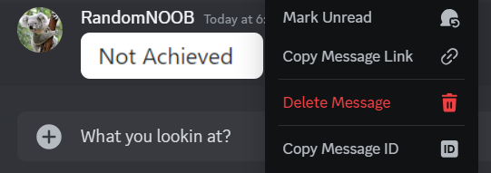
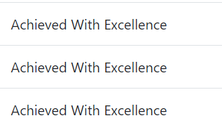
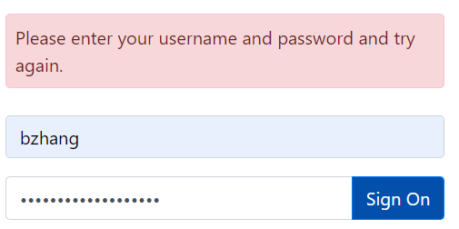
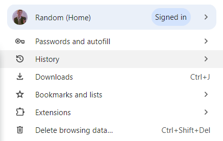
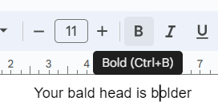
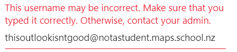

Usability Heuristics
Visiblity and System Status: Making sure that users always know what's going on in a website
Match Between System and the Real World: Use language and concepts familiar to users
User Control and Freedom: Allows users to easily undo and redo actions, giving them control over their interactions
Consistency and Standards: Ensure that similar actions and elements are consistent throughout the system to avoid confusion
Error Prevention: Stop an error from happening in the first place
Usability Heuristics
Recognition Rather Than Recall: Minimize the user's memory load by making information and options visible and easily accessible
Flexibility and Efficiency of Use: Provide shortcuts and customization options to help both novice and expert users work more efficiently
Aesthetic and Minimalist Design: Keep the design clean and focused, avoiding unnecessary elements that could distract from the main tasks
Help Users Recognize, Diagnose, and Recover from Errors: Use clear language to explain errors and offer solutions for recovery
Help and Documentation: Provide easily accessible help and documentation that is task-focused and easy to search